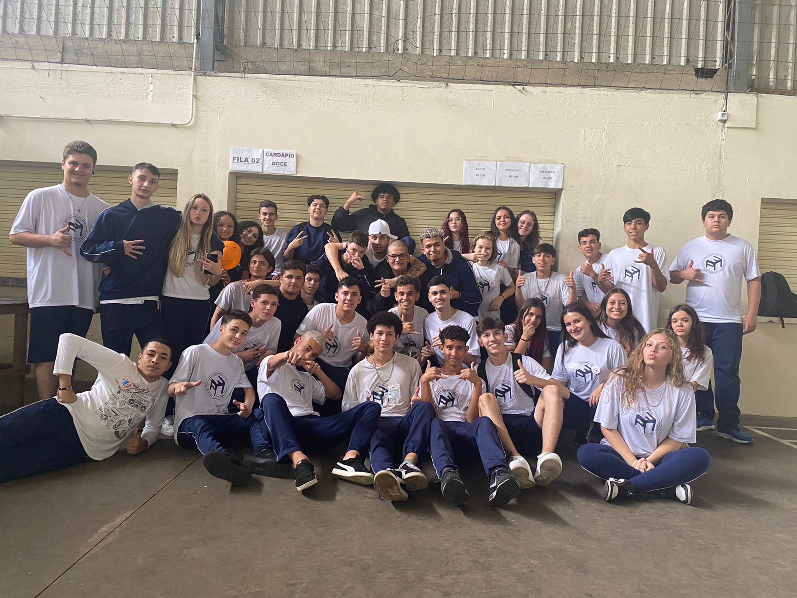
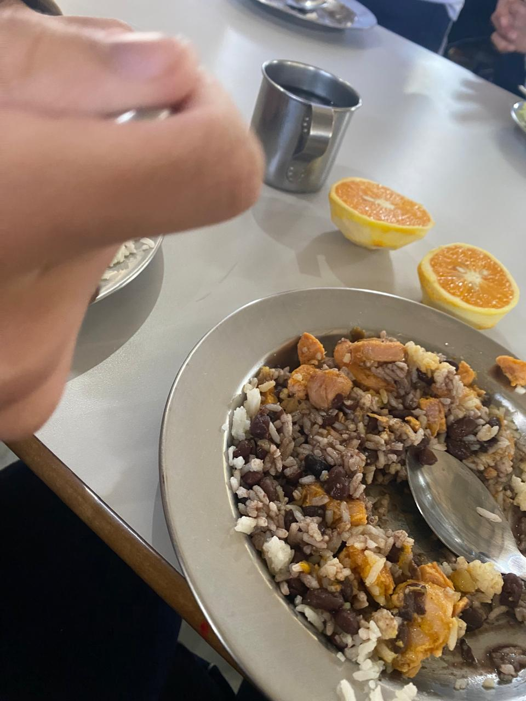

Do 6º ao 9º ano, quase não me lembro de nada, especialmente do 8º e 9º, porque a pandemia chegou e tivemos que ficar em casa. Minha turma era a mesma durante esse período, apenas mudando algumas pessoas que entravam a cada ano. No entanto, o 1º ano foi completamente diferente, já que eu estudava à tarde e mudei para o turno da manhã. Além disso, separaram todos os alunos, nos colocando em salas aleatórias. Mesmo assim, consegui fazer boas amizades. Foi nesse período que me aproximei do chris. Apesar de sempre estudarmos juntos antes, nunca tínhamos conversado. De repente, nos tornamos melhores amigos.
Tive bons momentos no 1º ano, mas as lembranças são vagas. No final daquele ano, tivemos que escolher entre a área de exatas ou humanas, o que resultou em uma nova separação da turma. No 2º ano, caí em uma sala com poucas pessoas que eu conhecia, mas, por sorte, eu e a Chris ficamos juntos na mesma sala novamente. Esse ano foi marcado por altos e baixos. Não tínhamos educação física, então fazíamos bagunça. Também houve confusão: uma vez, alguns meninos brigaram na aula e a professora saiu chorando. Apesar dos problemas, vivemos muitos momentos bons.
Ultima foto do 2 ano: 05/12/23, MORELLI
Este ano está sendo muito bom. Eu imaginava que o 3º ano seria mais difícil do que o normal, mas não foi bem assim. Uma das coisas que estou gostando é o trabalho da Cieli, de fazer uma maquete de icosaedro. A única coisa que achei ruim é que ainda não fizemos nenhuma excursão, mas o ano está sendo incrível e cheio de lembranças inesquecíveis. Vou sempre lembrar dessa turma, a melhor em que já estive, com momentos cheios de alegria. Estou sempre rindo, mas o melhor de tudo é que meu namorado está na mesma sala, vivendo esses momentos maravilhosos comigo. E, para deixar claro, eu amo muito ele!
Comida muito boa 👍🏻: 20/09/24